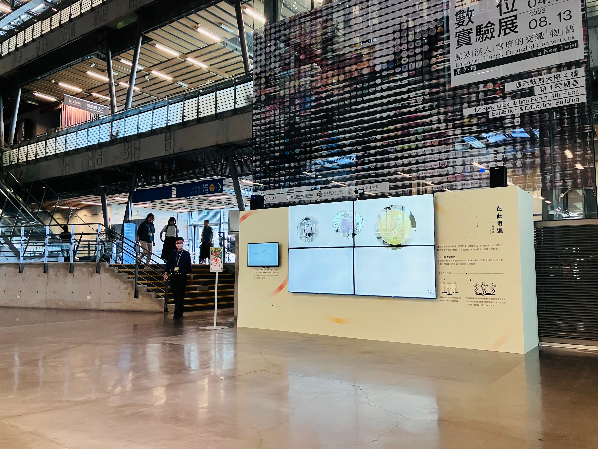
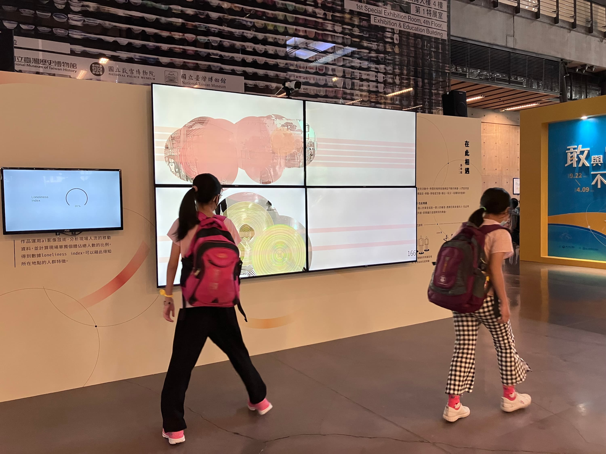
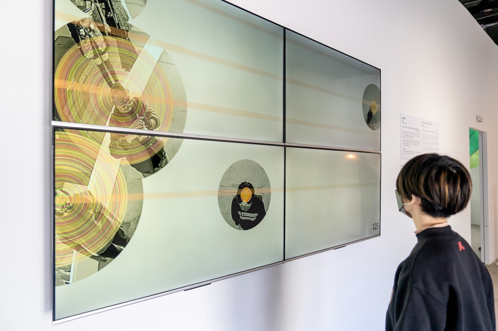
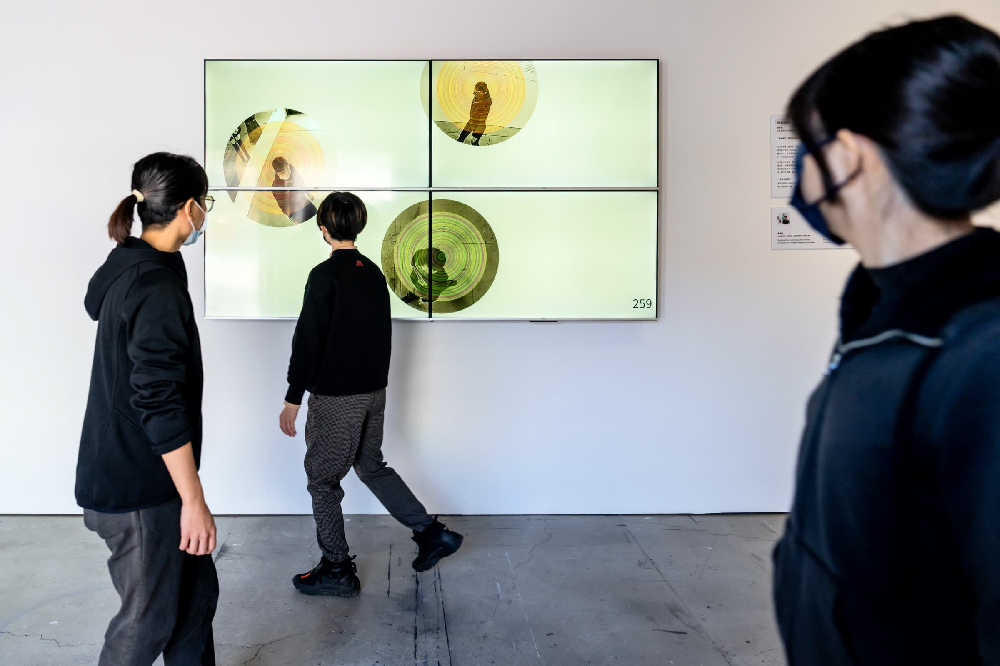
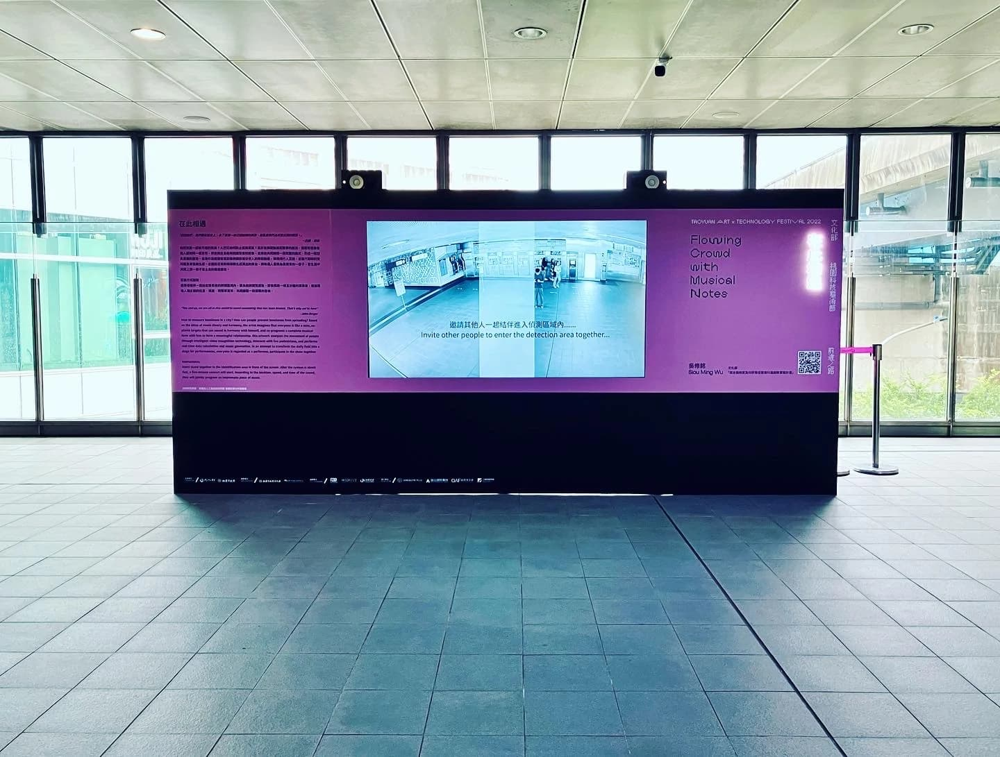
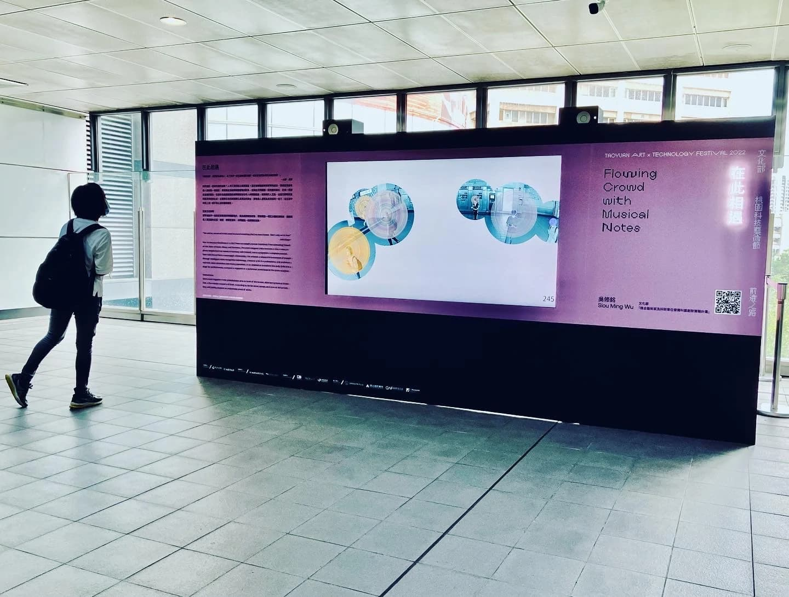

×
Interactive Intelligent Image Music System • 2022






'You and us, we are all in this world to mend something that has been broken. That's why we're here.' — John Berger. How can loneliness in a city be measured? How can people prevent loneliness from spreading?
Based on ideas from music theory and harmony, the artist imagines each person as a note and seeks sounds that can resonate with one another. Using intelligent video recognition, the work analyzes the movement of people in real time and transforms pedestrian flow into improvised music, turning everyday space into a stage where everyone becomes a performer.
Instructions: users stand together inside the identification area in front of the screen. Once the system recognizes them, a five-minute concert begins, composed according to the crowd’s position, speed, and duration of movement.